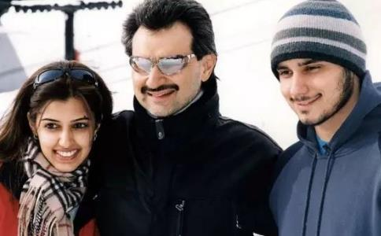

你绝对想不到沙特阿拉伯亿万富翁的儿子是一名纯
Khaled王子是中东首富、沙特皇族、沙特王国控股公司董事长、中东股神阿尔瓦利德亲王的独生子。作为这个世界上最富有的人之一的接班人，他从小
在年轻的时候，Khaled和其他富有的沙特人没有两样。吃肉、穿皮革、盖鹅绒被、从支持工厂化养殖的商店和餐馆购买食物、开豪车、游艇，享受富裕的宫廷生活。然而一次狩猎让他彻底改变了。
在九十年代末（他不记得确切的年份），Khaled在南非参加一次狩猎活动。这是一个有争议的仅限于富人的豪华游戏，他说话的时候他仍然感到沮丧。
那次异国的动物探险之旅，让他久久不能忘怀。他被深深触动，
2009年，Khaled被诊断出高胆固醇，医生开的药片让他感到头疼。他决定做一个永久的改变—转向更
他说，这次经历促使他通过像“悯惜动物MFA”这样的组织开始宣传动物权利。在社交媒体上，他转发@VeganTruther和@PETA的信息，询问是否吃牛肉和拥有鳄鱼皮钱包为动物带来
与此同时，他在生活上也做了大量的调整。在过去两年里，他出售了在石油和天然气行业的所有股份，转向投资可持续发展行业，包括高科技、太阳能发电、可再生能源、绿色建筑、素食餐厅等等。以前是豪华汽车爱好者，现在他放弃了收藏的200辆昂贵耗油车，现在只开一辆车——特斯拉Model X P90D。这是一个既生态环保，又使用人造皮革的纯素友好选择。
他自称是一名极客和Crossfit爱好者。不管飞往哪里，Khaled总是购买碳补偿来抵消旅行带来的碳足迹。他甚至也不住在沙特阿拉伯利雅得豪华宫殿里。
Khaled说：“农业产生的温室气体排放仅次于电力和热能产生的温室气体，而牛肉业排放的甲烷五年内的暖化效应比二氧化碳强100倍，它还消耗比猪肉或鸡肉还多11倍的水。”
但是，根据牛津大学最近对植物性饮食的研究，素食可以将与食物有关的温室气体减少63％，纯素（去掉所有肉类和动物产品）可以减少70％。
消费了多年令人不安的气候变化数据后，Khaled决定将环境可持续性作为生活的焦点。在他最喜欢的气候纪录片中，有阿尔·戈尔的“不可思议的真相”和莱昂纳多的“洪水来临前”。
“你不必成为一个火箭方面的专家或科学家就能理解气候变化是真实的，”Khaled说，“我看到科学数据就摆在那里，老实说，这很令人担忧！”
Khaled自称为乐观主义者，他知道这个星球会继续下去，但是人类将为气候变化付出最大的代价，他说：“我们破坏环境，但最后我们伤害的其实是我们自己，环境破坏到一定程度会反弹给我们，到那时我们都会消失，世界将恢复到原来的美丽模样。”
希望中东走向“绿色环保”2015年12月在沙特阿拉伯首都利雅得举行的石油行业会议上，Khaled王子就现代人大量投资石化燃料的疯狂行为表态，并敦促针对气候变化采取行动。
“从宏观角度来看，气候变化和不合理的能源消耗是我们当今面临的两个最严重的问题。” 他呼吁大家考虑气候变暖问题，让在座以石油积累
虽然沙特阿拉伯是世界上生产石油最多的国家，人口只有3100万，但也是世界上第六大消费国家。根据国际货币基金组织的数据，2015年石油部门占财政收入的 90％和出口收入的80％。在沙漠地区，原油非常廉价，SUV和凯迪拉克挤满了高速公路。
然而，尽管如此富足，但是这个国家的精英正在开始觉醒，意识到这种高飞的石化燃料消费的生活方式可能是不可持续的。自2015年Khaled王子呼吁后，沙特阿拉伯发生了很大变化，中东国家也加强了其减缓气候变化的承诺。
帮助邻国约旦节省60％电力成本Khaled不只是说说而已，他也采取行动。他迄今为止最大的成就之一就是将约旦转变成了100%使用LED灯和太阳能电池板的国家。随着时间的推移，这种转变可能为该国节省了60％的电力成本。
“我去到那里，向国王阿卜杜拉提议这个想法，他真的很喜欢，”Khaled说，“他安排了与能源部长和市政部长的一些会议，正是有了这些行动才取得了现在的成果。我们正在将整个国家的照明基础设施改为LED。”
约旦夹在伊拉克，沙特阿拉伯，以色列和巴勒斯坦领土之间，是世界上对外国能源最依赖的国家之一，其中96％来自进口石油和天然气。它几乎所有的动力都来自阿拉伯天然气管道，阿拉伯天然气管道在2011年至2014年间被恐怖袭击了十几次。不稳定性迫使该国改用柴油和重质燃料油，为此付出了高昂的费用和环境代价。
去年夏天，约旦开始在首都安曼的公共汽车运输路线上安装太阳能灯，这里是全国950万人的将近一半。作为沙特绿色建筑论坛的主席，Khaled希望在整个中东地区推出类似的项目。
Khaled最想看到的是他的祖国能有这样的巨变，逐渐减少对石化燃料的依赖。当这种依赖将变成一种责任而不是金融利益时，这一天就会到来。
带动土豪老爸改吃纯素Khaled王子的老爸没有靠石油生意发家，仅凭头脑和智慧打拼出一个财富帝国，常年雄踞中东首富的位置，被时代杂志称为“阿拉伯巴菲特”。王子对他的土豪老爸产生过影响吗？
“非常有趣，以前是没有的， 反而我受他影响很大，我从他身上学到很多。但最近是的，”Khaled说，“我向他介绍了麦可·格莱格尔医学博士Dr. Michael Greger的著作《如何不死掉》（How Not to Die），两个月后，去年8月他逐渐转变为纯素。一个人也许不能带来多大的影响 ，但如果每个人都这样做，将产生巨大的影响。”
Khaled王子可能成为「沙特阿拉伯绿色未来」的代言人。
“如果我们以经济、人道和实用的方式而不是贪婪的方式来看待事情，动物福利、工厂化养殖、环境问题……都是可以解决的。”Khaled说道。
显然，Khaled王子这样理性而有远见的呼吁，在一个石油文化国家里，是一个迫切被需要的发声。